01
第比利斯
已订 Purtseladze St 市中心住宿；抵达夜看 Mtatsminda，次日从住处步行完成老城闭环；城市段不开车。
第比利斯 → 军功大道与卡兹别克 → 卡赫季葡萄酒乡 → 西格纳吉 → 第比利斯；不去巴统、不赶西部大环线
路线结论：这不是常见的“全国压缩环线”，而是更适合你 8 晚、单人且有成熟海外自驾经验的东线闭环。它把最大价值放在军功大道、卡兹别克和卡赫季，同时取消 Batumi、Kutaisi、Mestia 造成的长距离搬运。
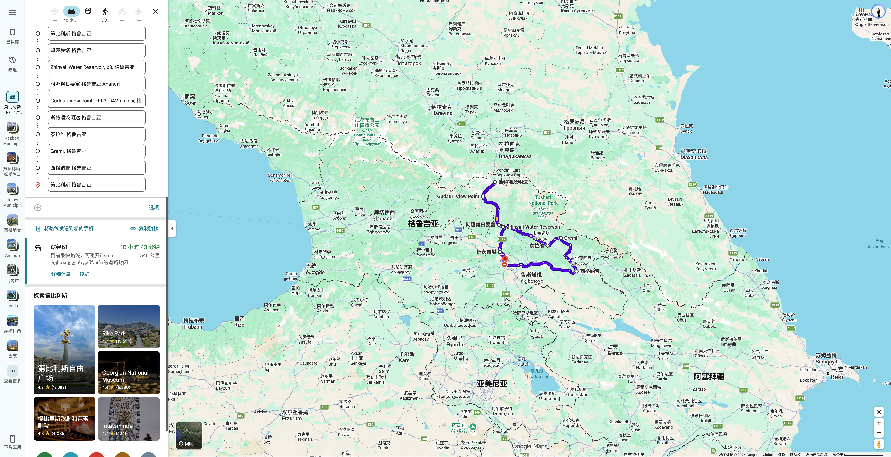
前两天不开车；卡兹别克连住三晚。路线以真正需要机动性的雪山与卡赫季为核心，不把西部塞进八晚行程。
已订 Purtseladze St 市中心住宿；抵达夜看 Mtatsminda，次日从住处步行完成老城闭环；城市段不开车。
取车后依次经过生命之柱主教座堂、日瓦利水库、阿娜努日要塞、Pasanauri 补给点和俄格友谊纪念碑。注意：中文社区常说的“圣剑山”是 Didgori Battle Memorial，并非格鲁吉亚编年史纪念碑；Didgori 位于第比利斯以西，不纳入当天北上路线。
9/28 傍晚看天气尝试 Gergeti；9/29 走 Juta；9/30 从同一民宿往返 Truso Valley。Truso 只开到租车合同、现场路况和停车条件都允许的位置，再徒步进入河谷。
10/1 从卡兹别克转场，先把车停在住宿地；下午或傍晚打车往返 Shumi 品酒。Shumi 必须预订；若接待满，住宿酒庄的品酒/晚餐是备选。
10/2 从特拉维经 Gremi、卡赫季乡村公路抵达；住一晚看城墙、河谷日落和翌日晨景。Bodbe 放到 10/3 回城前，避免一天塞过多停靠。
导航给的是纯驾驶时间；这份路书另外给停车、施工、天气、补给与天黑前抵达留空间。
Didgori Battle Memorial（圣剑山）位于第比利斯以西，不纳入北上路线；日瓦利短停、阿娜努日完整游览、Pasanauri 只作午餐补给、俄格纪念碑看能见度。
卡兹别克第三晚。只开到合同、现场路况和停车条件都允许的位置；其余以徒步完成。
白天只做长转场；Shumi 预约成功后由酒店/酒庄协助安排往返，不饮酒驾驶。
Shumi 已在前一晚完成；当天是清醒自驾、历史停靠与小镇日落。
午后回城还车，保留验车、补油和交通延误缓冲。
抵达 / 城市适应
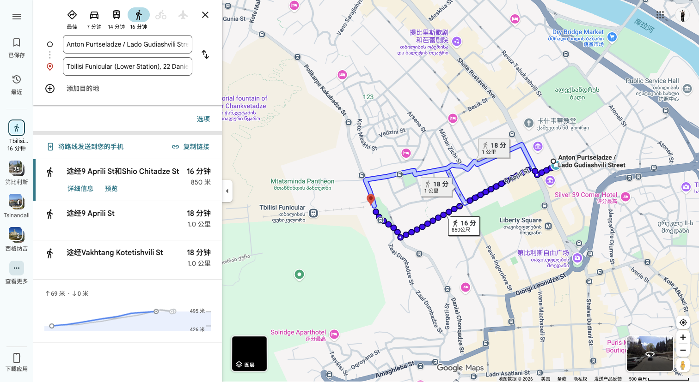
打开实时地图 ↗Google Maps 显示约 850 m、16 分钟步行，但约 69 m 爬升；抵达日建议 Bolt 到下站。地图覆盖住宿到下站，小火车上山及返程按当天运行状态决定。
查看 Mtatsminda Park 官方交通说明 ↗KC282 04:15 从浦东起飞，08:50 抵达阿拉木图；转机 1 小时 30 分；KC141 10:20 起飞，13:30 抵达 TBS。23 kg 托运行李；上海值机时拍照确认行李牌终点 TBS。
机场只换少量应急现金；Bolt 直达已订的住宿：8 Anton Purtseladze Street（房东 Teimuraz，9/26 14:00 后入住）。预计 15:30–16:30 完成入住，放下行李、洗澡换衣并休息后，再判断是否上山。城市两天不取车，9/28 12:00 前退房。
休息后从住宿前往传统小火车下站。Google Maps 显示步行约 850 m / 16 分钟，但累计上坡约 69 m；经历夜航后优先叫 Bolt，目的地输入“Tbilisi Funicular (Lower Station)”，并核对 22 Daniel Chonqadze St。由这里上 Mtatsminda Park 看傍晚和城市亮灯。不要误导航到 Rustaveli 52 的新空中缆车，也不要去 Rike Park—Narikala 缆车；晚点、疲惫、低云或停运时直接取消。
低云、降雨或能见度差时不为山顶夜景硬上山，改为住宿附近吃饭休息，不影响后续主线。
老城 / 硫磺浴
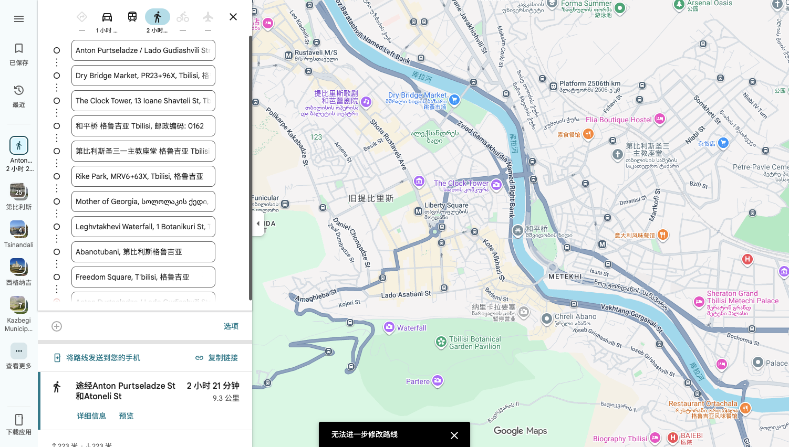
打开实时地图 ↗加入 Sameba 后全天步行量和爬升都会增加，但以你的脚力可接受。路线把圣三一放在和平桥与 Rike Park 之间，避免早晨先向东再折返旱桥。Rike Park → Mother of Georgia 必须乘缆车，不按 Google 的紫色步行线硬爬。
单独打开 Rike–Narikala 缆车站 ↗2 个视觉锚点 · 图片用于辨认地点与决定是否停留
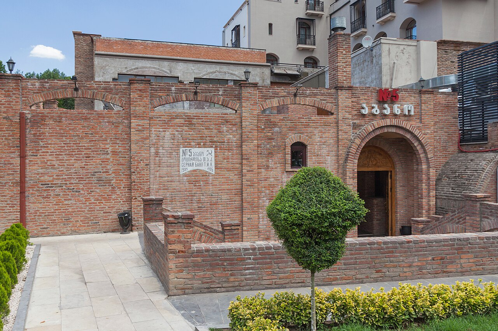
01砖砌穹顶是这一片最容易辨认的视觉线索；白天先步行看环境，傍晚再按预约回到浴室。
PHOTO · Marcin Konsek · CC BY-SA 4.0 ↗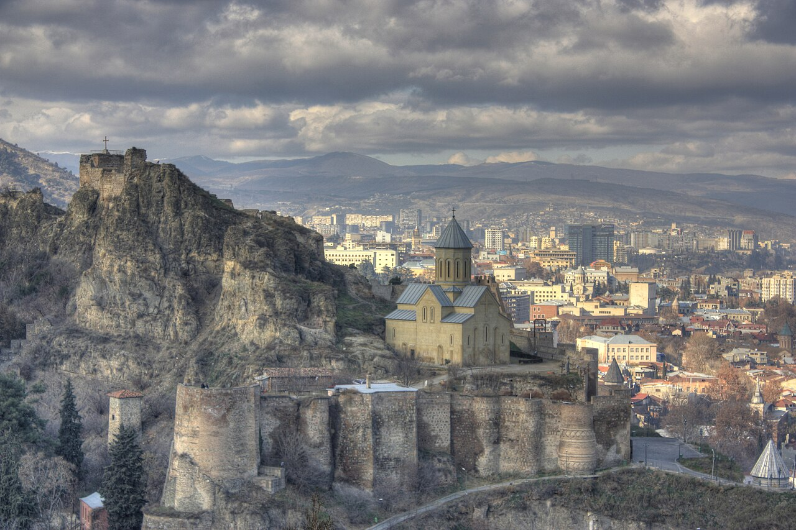
02高处视角适合观察老城、河谷和山坡关系；缆车停运或体力不足时不要为了这张照片硬爬。
PHOTO · George Melashvili · CC BY-SA 3.0 ↗早餐后从 Purtseladze St 住宿出发，经 9 April Park 步行到旱桥。周日把市集放在第一站，比下午才到更稳妥；古董、旧首饰、苏联时期物件和画作适合慢看，先问价再拍摊主近照，贵重物品贴身。
从旱桥沿河进入老城：Gabriadze 木偶钟楼、Anchiskhati Basilica、和平桥连续推进。烟囱冰淇淋只作路过加餐，不为网红食物绕路；过桥前后找一顿不过量的早午餐，为随后上行教堂留体力。
过和平桥后步行上行至 Holy Trinity Cathedral of Tbilisi（Sameba），留约 45–60 分钟看主教堂、庭院与城市视野；进入宗教场所保持安静并按现场着装提示。参观后顺坡返回 Rike Park，路线比从住宿先绕去教堂再折回旱桥更连贯。
从 Rike Park 乘缆车上山，把爬升留给交通工具；上站先看母亲像，再走 Narikala 外围。Google Maps 总览会把这一段按步行绘制，现场必须改乘缆车；当天若停运就放弃高处段，不为打卡硬爬。
从 Narikala 一侧顺坡下到 Leghvtakhevi 瀑布和硫磺浴区，再穿 Meidan 与 Kote Afkhazi 街走向自由广场。这样母亲像不是终点，整条 City Walk 才真正闭环。
只看 Abanotubani 浴场穹顶和 Chreli Abano 蓝色马赛克外观，不为单人私人包间支付约 130 GEL。随后沿 Meidan、Kote Afkhazi 找晚餐并收尾到 Freedom Square，再步行回 Purtseladze St 住宿。若现场临时很想体验，仅在规则清楚且总价不超过 50 GEL 时考虑公共浴池。
缩成 Abanotubani + 硫磺浴，高处观景取消。
第比利斯 → 卡兹别克
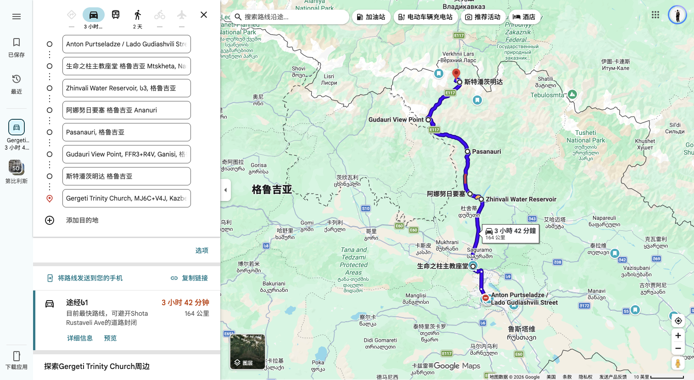
打开实时地图 ↗小红书多篇路线反复出现的核心是姆茨赫塔、日瓦利、阿娜努日和俄格友谊纪念碑；“孤独星球封面同款”指阿娜努日与 Gergeti。Didgori Battle Memorial（圣剑山）在第比利斯以西，无法作为当天顺路第一站；住宿具体点仍未加入 My Maps。
3 个视觉锚点 · 图片用于辨认地点与决定是否停留
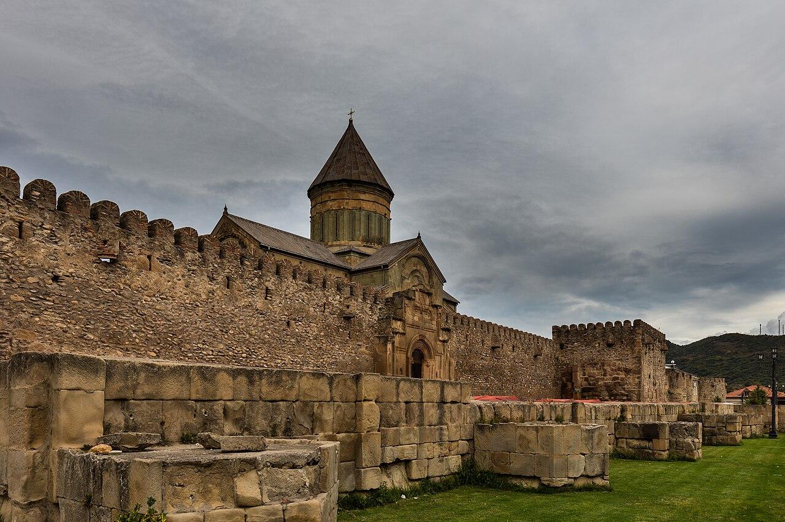
01离开第比利斯后的第一站。把古都放在上午，不需要同时追完周边所有修道院。
PHOTO · Diego Delso · CC BY-SA 4.0 ↗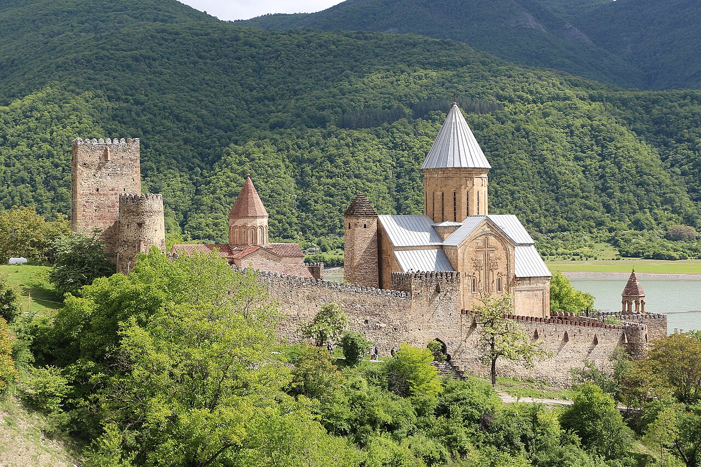
02与 Zhinvali 水库相邻，是当天最适合完整停留的一站；停车后步行看城堡和水面即可。
PHOTO · Bernard Gagnon · CC BY 4.0 ↗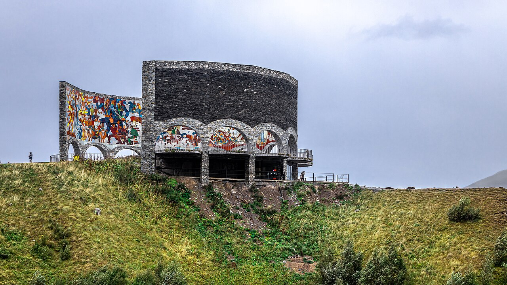
03高处风口与能见度决定是否值得停。天气差时只做短停，不为拍照在临崖区域久留。
PHOTO · Supanut Arunoprayote · CC BY 4.0 ↗先在 9/28 12:00 前退房（退房截止不算早，但取车当天建议 09:00 前带行李退房，走到市区店 44 Kote Abkhazi St，取车后直接装车出发，不要折返两趟）。再核对中国驾照格鲁吉亚文翻译及公证、主驾姓名信用卡、押金、跨区/非铺装限制和保险。环拍车身、轮胎、玻璃、底盘、油量与里程，要求把既有伤痕写入验车单。
9 月 28 日顺序为：生命之柱主教座堂（60 分钟）→ 日瓦利水库（10–15 分钟）→ 阿娜努日要塞（40–50 分钟）→ Pasanauri 午餐/补给（30–40 分钟）→ 俄格友谊纪念碑（仅能见度好时停 20–30 分钟）。Didgori Battle Memorial（圣剑山）位于第比利斯以西，不是北上卡兹别克的顺路节点；格鲁吉亚编年史纪念碑也不是圣剑山。Sno 留到 9/29 Juta 日。
先到 Stepantsminda 放行李，入住已选的 Kazbegi Cottages N6（9/28 入住、10/1 退房，共三晚）。若 17:15 前完成入住、山体可见且不疲劳，再开车或换当地合规车辆上 Gergeti 圣三一教堂；天气差或到得晚就取消，不赶夜路。住宿具体点按你的要求暂不加入 Google My Maps。
取消 Gudauri 久留和高处停车点，以白天安全抵达 Stepantsminda 为目标。
山谷往返徒步
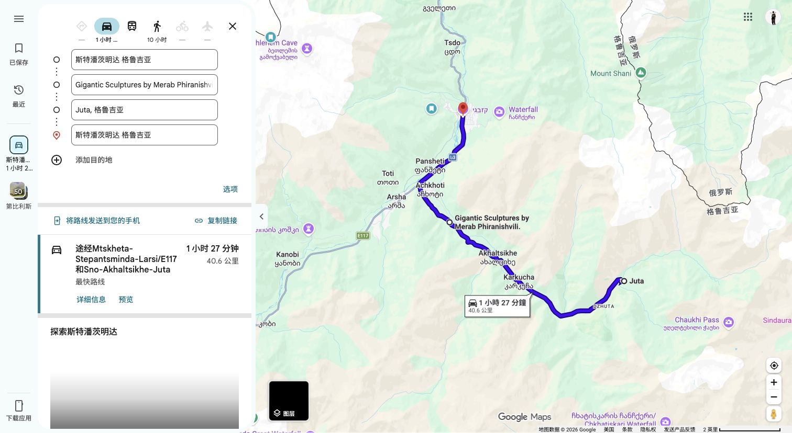
打开实时地图 ↗地图链接只负责 Stepantsminda—Sno—Juta 的驾驶段；徒步从现场认可的停车点开始。Fifth Season / Zeta 是基础目标，之后按天气和体力选择折返点。
2 个视觉锚点 · 图片用于辨认地点与决定是否停留
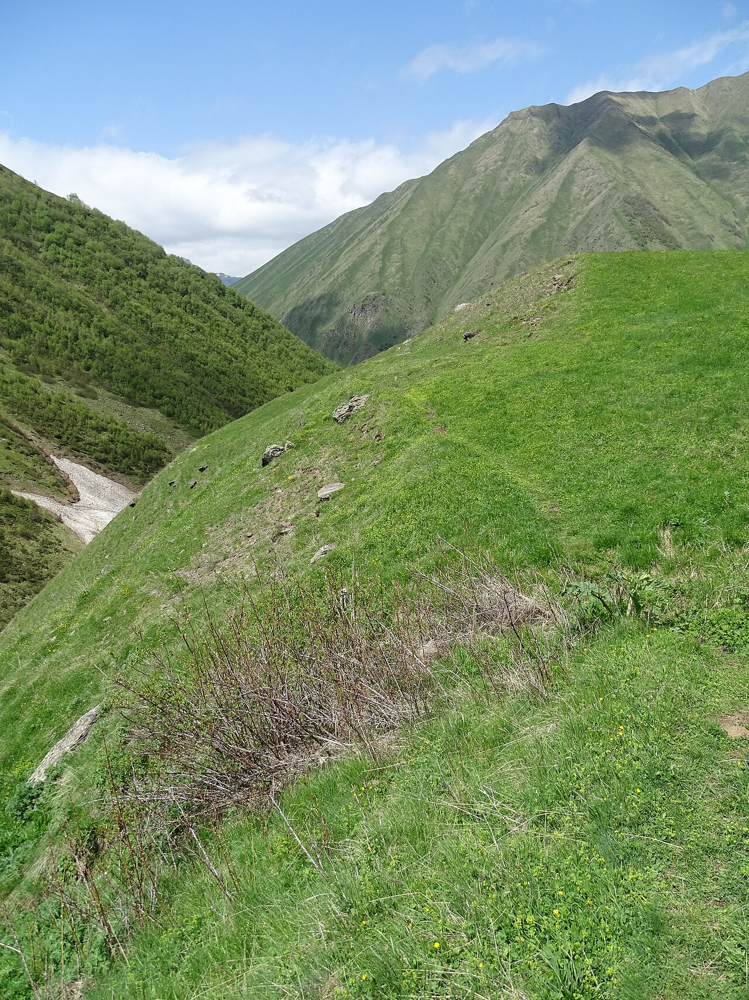
019/29 的唯一主线。Fifth Season / Zeta 是基础目标，随后进入 Chaukhi Valley；不追求必须抵达某个湖或垭口，15:00 到点折返。
PHOTO · Adam Jones · CC BY-SA 2.0 ↗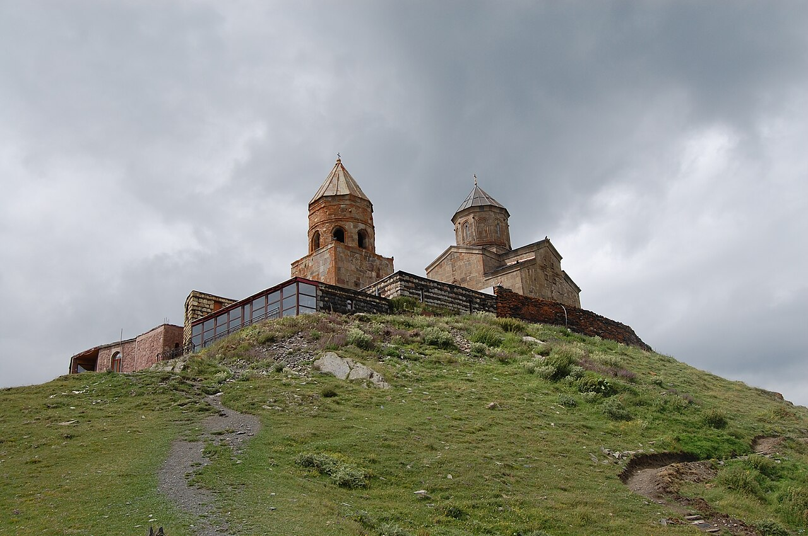
02只有 Juta 因天气或道路条件取消时，才把 Gergeti 放到今天；不与 Juta 完整徒步叠加。
PHOTO · Andrzej Wójtowicz · CC BY-SA 2.0 ↗从 Kazbegi Cottages N6 出发前查降雨、风、能见度和租车合同对非铺装路的限制。若 9/28 没有去成 Gergeti，不把它硬塞到今天早上；Juta 是今日唯一主线。
Sno 巨型人头雕像只停 10–15 分钟，它就在去 Juta 的路上。Juta 末段若不在租车许可范围或当天路况不好，把车停在合规位置后换当地车辆，不为省接驳费冒险驶入。
从 Juta 村上方进入主山谷，Fifth Season / Zeta 一带作为基础目标；天气、路迹和体力允许时再向 Chaukhi Valley 深入。全程原路返回，不把湖区或垭口写成必须终点，最迟 15:00 无条件折返。按约 4.5–6 小时、9–13 公里的弹性版本准备，具体距离以当天实际折返点为准。
回到停车点后原路经 Sno 返回；如实际下山较晚就不再停车。回镇后补水、加油、检查 9/30 Truso 的天气、边防登记要求和租车合同；不在 Juta 日叠加 Truso。
雨雪、强风、低能见度或 Juta 进村路况不明时取消徒步；留在 Stepantsminda 休整，必要时用车可达的 Gergeti 作替代。
河谷轻徒步 / 完整往返
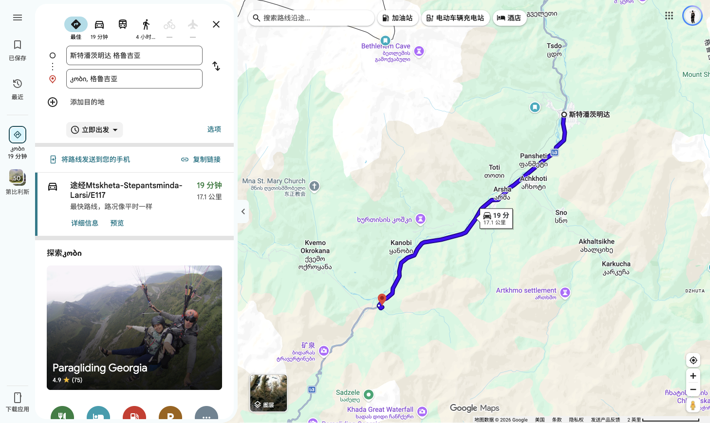
打开实时地图 ↗地图只给出 Stepantsminda—Kobi 的铺装驾驶段；Kobi 之后是否能继续开、停在哪里，完全以租车合同、当天路况和现场标识为准。
1 个视觉锚点 · 图片用于辨认地点与决定是否停留
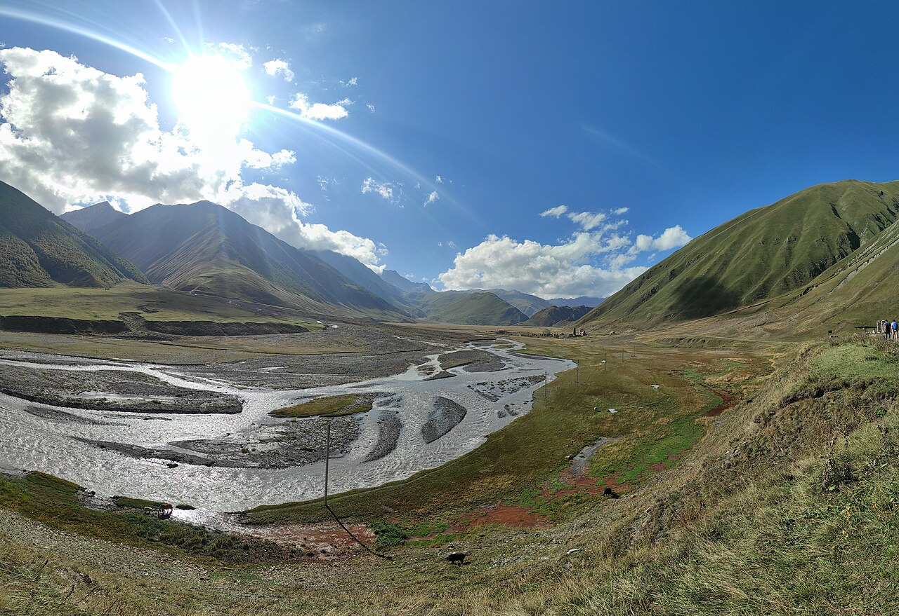
01这不是第二个 Juta：以低爬升的河谷步行和荒野感为主。走多久由合规停车点、天气和独行状态决定。
PHOTO · Google Maps / 路书现场辨认图 ↗卡兹别克民宿已加住至 10/1，今天不搬行李。确认降雨、风、河谷能见度、护照原件、租车合同是否允许驶离铺装军功大道，以及 Kobi 一带现场可停车的位置；任一项不清楚就不把车开上非铺装路。
沿军功大道到 Kobi 入口区域。普通租车默认只在铺装路旁或现场明确允许的地点停车；目标是宽阔河谷、矿泉地貌和废弃村落的荒野感，不追求走到最深处。河谷徒步相对平缓，但从合规停车点起的距离会因你能开到哪里而变化；最迟 14:30 开始返程。
回到同一民宿洗澡、整理徒步装备、把行李和车内补给恢复为 10/1 长转场状态。晚餐不饮酒，确认特拉维住宿停车、Shumi 预约和接送方案。
雨雪、强风、低云、河谷能见度差，或租车合同/停车点不明确时，取消 Truso；留在 Stepantsminda 休整、短走镇周边或补 Gergeti（仅道路和天气允许时）。
转场后打车完成 Shumi 品酒
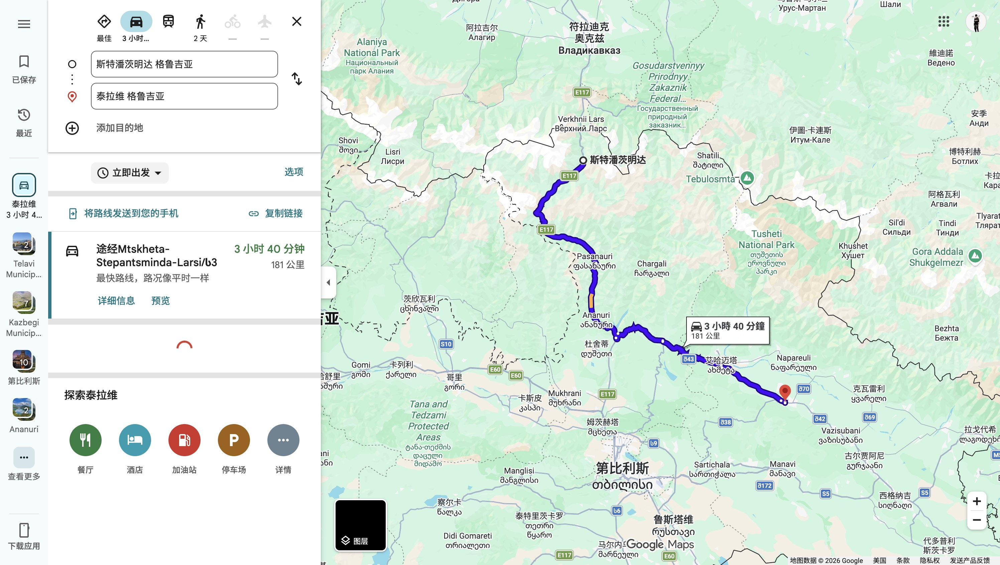
打开实时地图 ↗地图展示卡兹别克到特拉维的驾驶段。Shumi 往返不以自驾导航替代：先确认预约与司机，再让车留在住宿地。
2 个视觉锚点 · 图片用于辨认地点与决定是否停留
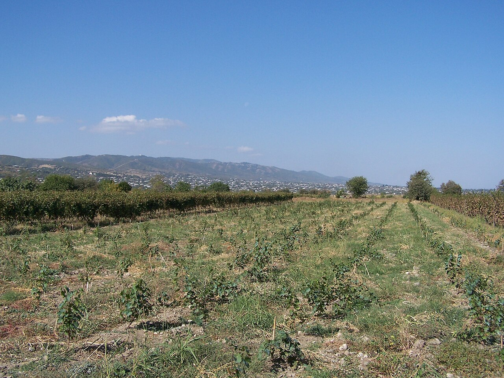
01从高加索山地转场进入葡萄园；今天的酒庄体验不由你开车完成。
PHOTO · rugbyxm · CC BY 2.0 ↗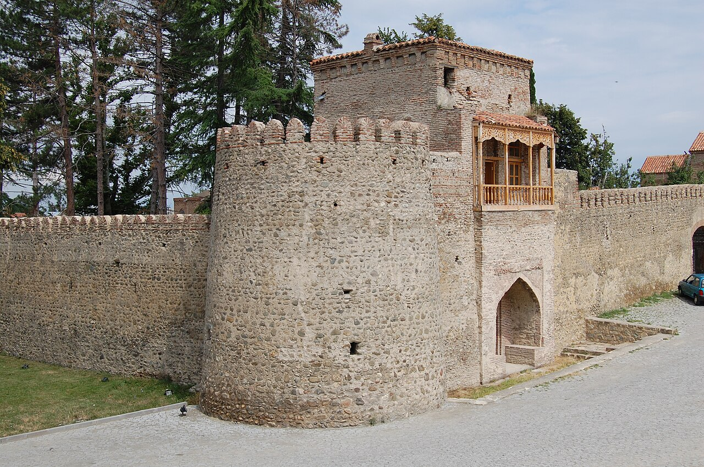
02先解决停车和接送，再安排 Shumi；酒庄接待有满位风险，住宿端的替代体验很重要。
PHOTO · Andrzej Wójtowicz · CC BY-SA 2.0 ↗从卡兹别克民宿退房后直奔特拉维。Google Maps 当前纯驾驶约 3 小时 44 分；按 4.5–5.5 小时实际转场准备，今天不回头补军事大道的旧停靠点。
先把租车停在住宿地，入住后不再自己开去 Shumi。确认已预约的 Shumi 到店时间、往返司机/酒店叫车、结束后回程方式；Shumi 若接待满，使用住宿酒庄的品酒/晚餐作为 Plan B。
Shumi 是当日主体验；在已确认预约和往返车的前提下正常品酒，结束后打车回特拉维住宿。不要把‘现场可进’当作默认：近期实测出现婚礼包场和晚间满位，预约失败时直接启用住宿酒庄的替代体验。
若卡兹别克出山遇强降雨、低云或道路延误，优先安全抵达特拉维；立刻通知 Shumi 和司机延后/取消，不在天黑后疲劳自驾赴酒庄。
Telavi → Gremi → Sighnaghi
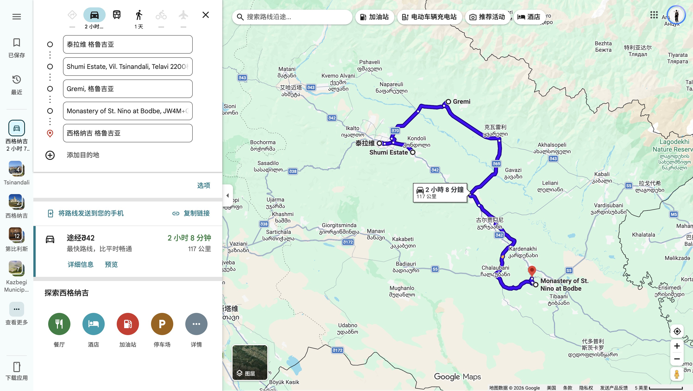
打开实时地图 ↗Shumi 已在 10/1 通过打车完成；10/2 不再品酒，留出充足时间把 Gremi、路上停靠与西格纳吉住一晚走得松弛。
4 个视觉锚点 · 图片用于辨认地点与决定是否停留
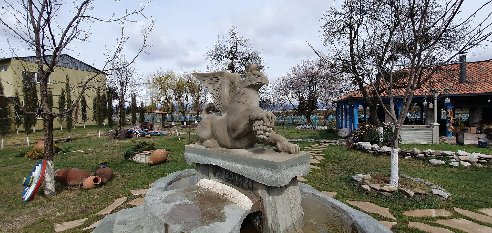
01把品酒放在 10/1 停车之后，才可以真正喝；10/2 只保留照片作为路线记忆，不再把酒庄塞进驾驶日。
PHOTO · Hijas Rahim Binutha · CC BY-SA 4.0 ↗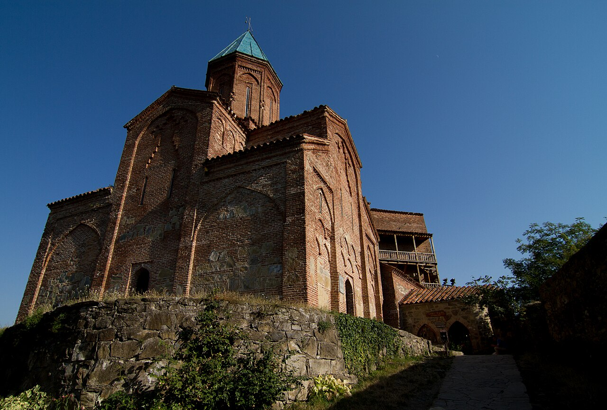
02在卡赫季路线中辨识度最高的历史地标之一，适合做明确停靠点，而不是继续堆叠同类教堂。
PHOTO · Jon Gudorf Photography · CC BY-SA 2.0 ↗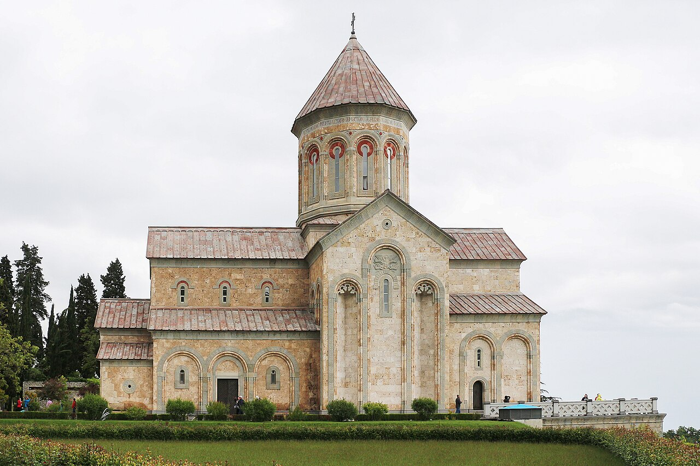
03把 Bodbe 从今天挪到 10/3 的回程晨间，避免酒乡纵向驾驶日堆叠太多停靠。
PHOTO · Bernard Gagnon · CC BY 4.0 ↗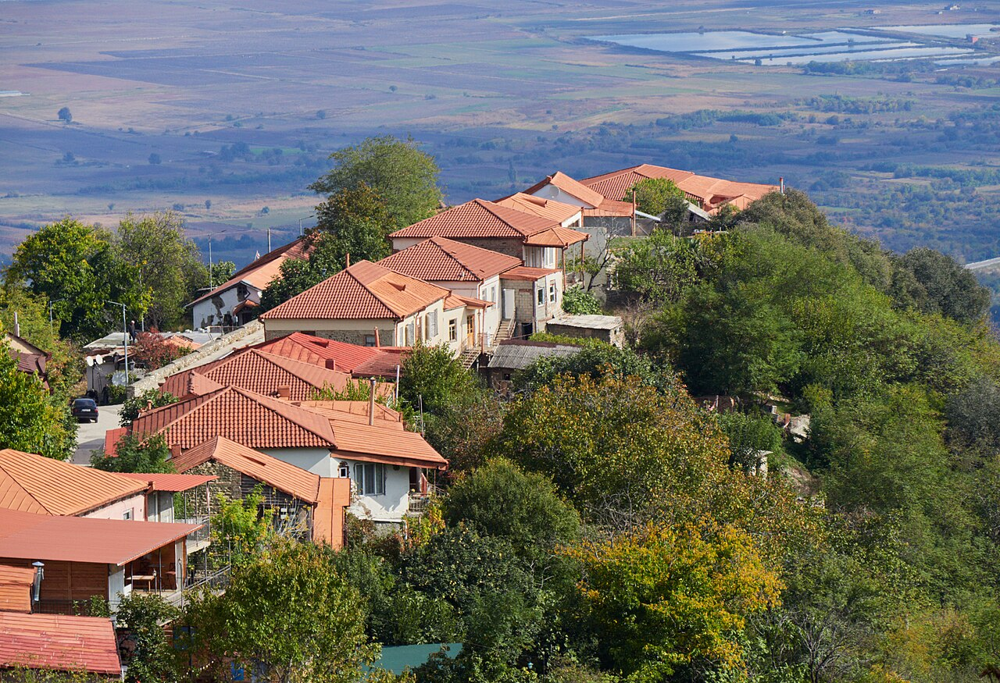
04真正值得的是住一晚后的傍晚与清晨，而不是从第比利斯当天往返的匆忙打卡。
PHOTO · lumoplank · CC0 ↗昨晚品酒后，今天恢复自驾。先到 Gremi，以城堡与教堂群作为卡赫季唯一明确的人文停靠；不再塞第二家酒庄或 Tsinandali Palace。
沿途留出午餐、葡萄园和村庄短停的弹性；不固定打卡每个教堂。抵达西格纳吉后先问清停车，再办理入住。
下雨时保留 Gremi 的短停，减少乡村支线；抵达西格纳吉后改为老城、咖啡馆和晚餐，不把日落视为必须完成。
收尾 / 还车
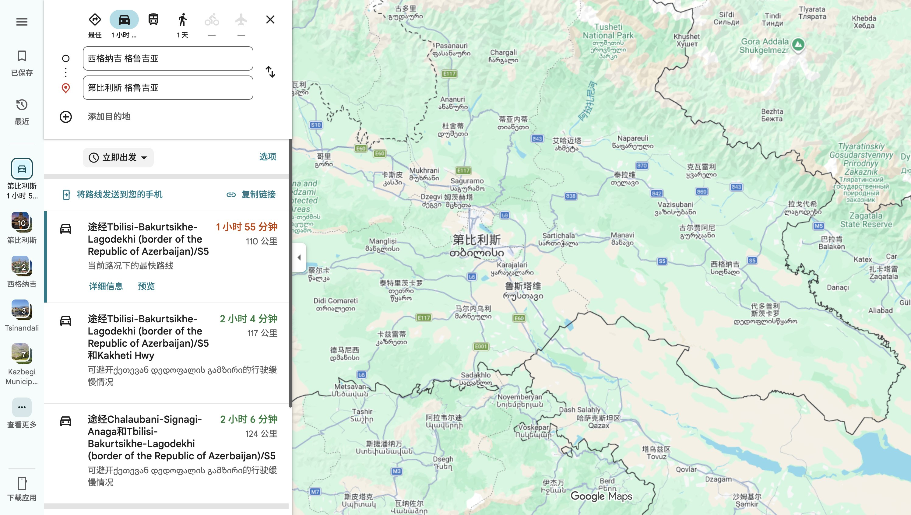
打开实时地图 ↗当天不再增加远距离支线。路线重点是留出加油、堵车、验车和押金手续缓冲，而不是压榨最后一个景点。
1 个视觉锚点 · 图片用于辨认地点与决定是否停留
游客增加前走城墙与老城，早餐后退房。天气差时直接缩短拍摄，保证回城和还车。
PHOTO · lumoplank · CC0 ↗游客增多前完成城墙与老城晨拍；早餐后退房（订单退房时间为 11:00 前），再前往 Bodbe。Bodbe 距西格纳吉仅 11 分钟 / 3.2 公里，从 Bodbe 继续往第比利斯是 1 小时 59 分 / 110 公里，走 S5，等于只多绕 2 分钟，是真正的顺路点。
全程约 1 小时 57 分 / 110 公里，走 S5（第比利斯—巴库尔齐赫—拉戈代希公路）。途中 Badiauri 村的石炉面包是这条线上最顺手的停靠，加进去只多 4 分钟、里程不变。进城前把油补到取车时的刻度并保留小票，多数合同要求同油量归还。
SIXT 在第比利斯只有两个网点，市区店位于老城 44 Kote Abkhazi St（自由广场往老城方向，离前两晚住处步行十几分钟），官网标注 24 小时取还车。尽量挑有人值守的时段当面验车：拍仪表、油量和全车视频，拿到无新增损伤记录；只有夜间自助还车时，验车可能被推到下一个工作日，事后争议没有当场凭证。尽早锁定车型与条款，别拖到最后一周。
提前离开 Sighnaghi，压缩老城散步，优先准时还车。
返程 / 机场
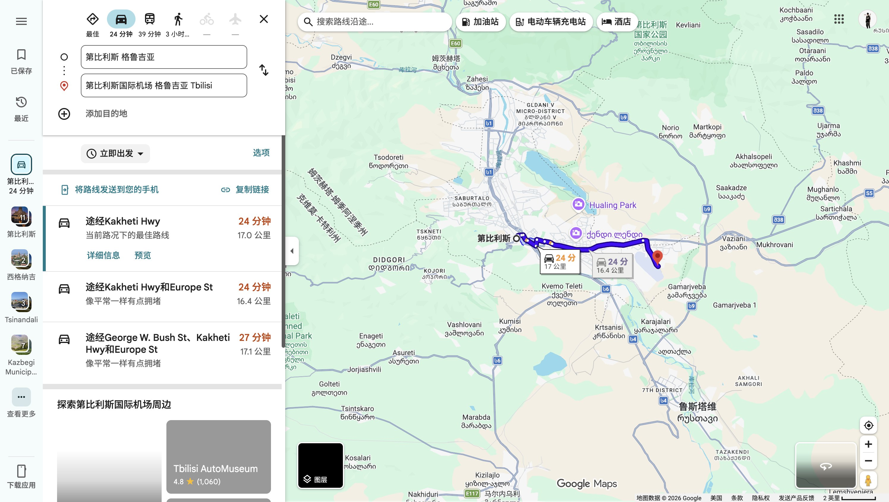
打开实时地图 ↗国际航班按起飞前约 3 小时到机场倒推。地图时间只是无突发状况下的参考，清晨仍为叫车、行李和航站楼核验留缓冲。
1 个视觉锚点 · 图片用于辨认地点与决定是否停留
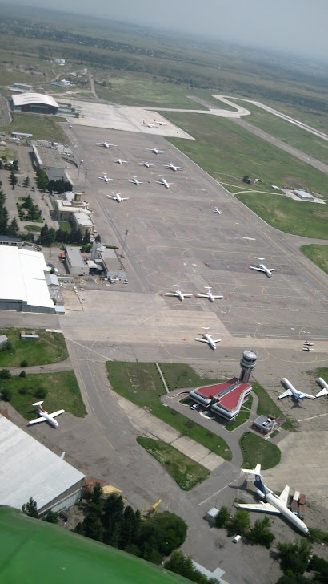
01返程日没有观光任务；确认航站楼、登机口、行李牌终点 PVG，并把无人机电池放在随身行李中。
PHOTO · Gmaisuradze15 · CC BY-SA 3.0 ↗国际航班预留约 3 小时；随身带护照、保险、行程单、租车归还记录与行李联。
DV844 11:00 起飞，15:30 到奇姆肯特；转机 3 小时 40 分；DV461 19:10 起飞，10 月 5 日 04:55 到浦东。23 kg 行李且回程已确认直挂；TBS 值机时仍拍照保留终点 PVG 的行李牌。
比原计划再提前 30–60 分钟离店，关注航司与机场通知。
这里不只是“要订什么”，而是每一项当前到哪一步、付款前必须看到什么。
小红书实测参观约 10 GEL、品酒套餐 25–50 GEL；官网未公开单人套餐，需确认时长、餐食、取消规则与是否能协助安排往返车
最后一晚 HK$299（2026-09-20 房源页显示），免费取消至 9/28；前 2 晚以 Airbnb 订单页为准
以 Airbnb 订单页为准（订单概览页不显示房费明细）；此前页面价 HK$796 / 2 晚仅作参考
按单人自驾的摩擦成本整理：停车、坡路、份量、天气和每天补给。
机票按已出票金额保留；落地花费、单人租车溢价和天气机动分别看。
约 ¥13,366；扣除已付机票后，落地约 ¥7,100
约 ¥18,446；扣除已付机票后，落地约 ¥12,180
约 ¥26,036；扣除已付机票后，落地约 ¥19,770
| 项目 | 数量 | 经济 | 舒适 | 宽裕 |
|---|---|---|---|---|
| 往返机票来自你提供的往返行程单；若已支付，可从待付预算中扣除 | 1 × 人 | ¥6,266 | ¥6,266 | ¥6,266 |
| 强制旅行保险估算；须满足 30,000 GEL、全程日期和语言要求 | 1 × 份 | ¥120 | ¥220 | ¥400 |
| 第比利斯住宿单人住一间；位置与坡度优先 | 3 × 间夜 | ¥260 | ¥430 | ¥700 |
| Stepantsminda 住宿已选 Kazbegi Cottages N6，原订 9/28–9/30 两晚；因 9/30 改走 Truso 需加住到 10/1 退房，共三晚。页面价 HK$796 / 2 晚，加住后按新账单为准 | 3 × 间夜 | ¥220 | ¥400 | ¥650 |
| Telavi + Sighnaghi 住宿Telavi 10/1 一晚已发生（HK$298.09）；此处按西格纳吉 10/2 一晚估算，停车条件影响选择 | 2 × 间夜 | ¥250 | ¥450 | ¥800 |
| 自动挡租车此前 Tbilisi 4 日报价折算后的 5 日规划区间；未锁价 | 5 × 天 | ¥340 | ¥560 | ¥850 |
| 保险减免/玻璃轮胎底盘估算；是否包含、免赔额和排除项以合同为准 | 5 × 天 | ¥70 | ¥130 | ¥220 |
| 燃油、停车、洗车与道路机动按 600–750 km 和价格波动留余量 | 1 × 全程 | ¥650 | ¥850 | ¥1,100 |
| 驾照翻译与公证规划估算；实际按办理机构 | 1 × 套 | ¥200 | ¥300 | ¥450 |
| 机场与还车后市内交通Bolt + 少量公共交通 | 1 × 全程 | ¥180 | ¥320 | ¥600 |
| 餐饮单人日均；高价酒庄餐另计 | 9 × 天 | ¥120 | ¥220 | ¥360 |
| 门票、硫磺浴与当地接驳含必要时 Gergeti/Juta 当地车和私人浴室差异；Shumi 套餐尚无官方报价，暂未计入 | 1 × 全程 | ¥300 | ¥650 | ¥1,200 |
| SIM/eSIM山区仍需离线地图 | 1 × 份 | ¥80 | ¥120 | ¥180 |
| 机动与应急天气改线、拖车自付、小额购物与价格波动 | 1 × 全程 | ¥500 | ¥900 | ¥1,600 |
点击即可勾选，状态保存在这台设备的浏览器里；打印时会保留方框。
54 条来源把小红书体验、官方规定、地图、价格样本和服务商信息分开呈现。
路线结论：这不是常见的“全国压缩环线”，而是更适合你 8 晚、单人且有成熟海外自驾经验的东线闭环。它把最大价值放在军功大道、卡兹别克和卡赫季，同时取消 Batumi、Kutaisi、Mestia 造成的长距离搬运。
Google Maps 主图已按实际顺序标记 10 个节点，当前页面显示约 545 km / 10 小时 43 分纯驾驶；这个数字不包含 Gergeti、Juta/Truso、酒庄、找停车、施工与休息，因此预算按 600–750 km。
小红书体验信息支持这条取舍：近期东线自驾帖把 Tbilisi、Kazbegi、Telavi、Sighnaghi 组合为闭环；Juta 体验帖提醒末段路况粗糙、短线很快有景观。它们用于节奏、路感与避坑，不代替官方证件、道路和空域规则。
Shumi 已改为 10/1 抵达特拉维后的品酒夜：先停车、再打车往返，避免‘品酒后继续自驾’的冲突。官方页面提供电话和邮箱，但未公开单人参观套餐、价格与场次；小红书实测还出现婚礼包场与晚间满位，因此必须预约核实。
单人自驾的最大代价不是驾驶难度，而是酒庄体验受限、事故处置无人分工、所有租车与住宿成本不能分摊；预算因此比原先拼车/小团版明显上升。
无人机结论是“可以在符合开放类别、空域和场地规则时飞”，不是全国自由飞。Gergeti 等宗教场所/热门停车区的社区信息存在冲突，现场禁飞标志和管理人员要求优先。
酒庄位于 Kakheti 并介绍 Qvevri 与格鲁吉亚酿酒传统；联系电话 +995 599 152 585；联系邮箱 shumi@shumiwinery.com；官网未显示可直接确认的单人参观价格和场次
2026 年起强制保险；最低 30,000 GEL；保单语言、日期与内容要求
中国驾照翻译及公证；山区道路与事故理赔风险
卡兹别克徒步天气、通信与向导建议；天黑前返回
Rustaveli 大道议会周边示威风险；出租车与扒窃提醒
第比利斯圣三一大教堂位于 Elia 山上；Sameba 是第比利斯标志性宗教建筑与城市观景节点
老城 7 公里、2–4 小时路线；Abanotubani、瀑布与 Narikala 景点顺序
Rustaveli 52 出发的是通往 Mtatsminda Park 的新空中缆车；新缆车与传统 Funicular 不是同一套交通系统
公共/私人浴室价格；kisa 参考价；晚间提前预约
第比利斯公路参考时长；Gergeti 到达方式；高海拔保暖
Ananuri、Gudauri、Gergeti、Gveleti 与 Juta 线路结构
第比利斯至 Sighnaghi 参考时长；卡赫季一日线路 8–12 小时
USD/GEL 与 CNY/GEL 官方参考汇率
开放类别 120 m、VLOS、人群与公共活动限制；无人机规则入口
≥250 g 注册与线上考试；注册免费与机身标识
飞行前空域检查；网站功能未完全完善的提示
游客项目包括导览、品鉴、互动活动和传统餐食；Shumi 位于 Tsinandali 村；距 Tsinandali Palace 约 449 米
D07 日级路线约 117 km；D07 日级路线约 2 小时 8 分纯驾驶
传统 Funicular 下站的地图位置；下站地址为 22 Daniel Chonqadze St
入口在 Kobi 一带，铺装军功大道与谷内非铺装道路应分开判断；普通租车是否可驶入、保险是否覆盖需以车行合同和现场路况为准；靠近边境区域，护照原件与现场登记要求优先
Didgori Battle Memorial 位于 Mount Didgori、海拔约 1647 米；纪念碑包含插入地面的巨剑群，纪念 1121 年迪德戈里战役；位置坐标约为 41°45′38″N, 44°30′29″E，位于第比利斯以西而非军功大道北线
第比利斯前段住宿当日价格样本
Stepantsminda 当日住宿价格样本
第比利斯后段住宿当日价格样本
卡兹别克团费与产品类型区间
卡赫季拼团、私团与采收体验价格区间
Mtskheta 半日/一日团价格区间
Airbnb 行程列表显示该订单为 9/28–10/1，共三晚，加住已完成；订单页：9/28 14:00 后入住、10/1 11:00 前退房；房东名显示为 Kazbegi Cottages；订单概览页只显示到城镇（斯特凡茨敏达，姆茨赫塔-姆季阿涅季州），没有门牌号，需向房东索取精确坐标；10/1 当天从同一民宿直接转场特拉维
用户已完成 9/26 入住、9/28 退房的第比利斯预订；订单页地址 8 Anton Purtseladze Street, 第比利斯；入住 9/26 14:00 后、退房 9/28 12:00 前；12:00 是本行程里最晚的一次退房；9/28 当天取车北上卡兹别克，退房时间决定上午可用时间
用户已选定 10/3 入住、10/4 退房的第比利斯最后一晚房源「公寓数据」；房源页位置标签为「靠近自由广场」，房源位置标注老城区；评价提到距自由广场地铁站约 600 m 的巷子内；15:00 后入住、10/4 11:00 前退房；自助入住、可寄存行李、有空调；2026-09-20 房源页显示 HK$299 / 1 晚，4.95 分 / 102 条评价，免费取消至 9/28；次日 07:45 出发去机场：Google Maps 实测自由广场 → 第比利斯机场 22 分钟 / 16.3 km
用户已完成 10/1 入住、10/2 退房的 Telavi 预订；地址 სულხანიშვილის ქუჩა（Sulkhanishvili 街）, Telavi；订单页显示入住 14:00、退房 11:00；房源页标明免费停车；最多 2 人、无噪音时段 22:00–08:00；已付金额 HK$298.09 为 2026-09-17 订单页显示值
用户已完成 10/2 入住、10/3 退房的 Sighnaghi 预订；订单页地址 9 აპრილის ქუჩა（9 April 街）, Sighnaghi, 卡赫季；房东 Tsisana；入住 10/2 14:00 后、退房 10/3 11:00 前；退房时间直接决定 10/3 回城节奏；订单概览页未显示房费明细，出发前需在订单详情页复核金额与取消政策
姆茨赫塔、Jvari、生命之柱、日瓦利、阿娜努日和俄格纪念碑的顺路体验；日瓦利适合路边短停，俄格纪念碑价值取决于能见度；Sno 雕像可留到 Juta 日顺路停留
姆茨赫塔停约 1 小时、日瓦利路边短停、阿娜努日停约 40 分钟；俄格纪念碑大雾时应直接放弃；卡兹别克连住两晚并在次日安排 Juta 可行
生命之柱、日瓦利、阿娜努日、俄格友谊纪念碑的行驶顺序；日瓦利看看即可，阿娜努日内部值得留时间；阿娜努日高处机位有安全风险，不为拍照钻非正式通道
姆茨赫塔→阿娜努日→俄格友谊纪念碑→Gergeti 的核心驾驶动线；在山中过夜而不当日返回第比利斯的节奏
9 天花费样本；住宿坡路与现金使用；晚订活动风险
8 天环线每日长车程；城市刷卡与山区现金；住宿入住人数和坡路坑
旱桥市场值得慢逛并适合买小件纪念品；钟楼、Anchiskhati、自由广场、和平桥和 Rike 缆车可串成一日步行；烟囱冰淇淋属于可跳过的甜食，不应成为路线锚点；原帖路线图由聊天工具生成，只作为体验参考，不作为距离和营业时间依据
Juta 进村路况；短线与到湖时间体感；当地车辆体验价
solo 旅行体验；7–8 天路线取舍；Bolt、现金与山区穿衣
山景木屋供暖、热水、Wi‑Fi 与坡路风险；冬季天气内容未外推至本行程
作者在 Shumi 晚间遇到接待满位，改去 Schuchmann 完成品酒；特拉维镇上叫车可能等待，酒店或酒庄协助安排通常更快；品酒日不应继续自己驾驶
Tbilisi—Kazbegi—Telavi—Sighnaghi 东线闭环；自驾节奏与路况体验
旅行者注册流程体验；社区经验不替代官方空域核验
10 个主节点的空间关系；当前概览约 545 km / 10 小时 43 分纯驾驶
Juta 作为 9/29 主线，Sno 在去程顺路短停
Truso 作为 9/30 从卡兹别克往返的独立徒步日；地图定位不替代保护区、边境和道路现场规则
当前约 181 km、3 小时 44 分纯驾驶；10/1 应按 4.5–5.5 小时实际转场预留缓冲
Sighnaghi → Bodbe 修道院：11 分钟 / 3.2 公里；Bodbe → 第比利斯：1 小时 59 分 / 110 公里，途经 S5（第比利斯—巴库尔齐赫—拉戈代希公路）；Sighnaghi → 第比利斯 直行：1 小时 57 分 / 110 公里；加 Bodbe 后仅多约 2 分钟；经 Badiauri：2 小时 1 分 / 110 公里，里程不变，只多约 4 分钟；自由广场 → 第比利斯国际机场：23 分钟（10/4 早上打车的参考值）
事故后联系警方、保险与租车公司；押金与租车流程核对
Tbilisi 机场租车车型与价格规划锚点；最终按具体日期结算页复核
第比利斯只有两个 SIXT 网点：Tbilisi International Airport 到达大厅，以及市区 44 Kote Abkhazi St（老城，自由广场往老城方向）；市区店官网标注 24 小时取车、24 小时还车；机场店未标注 24 小时；市区取、市区还即同点还车，不产生异地还车费；若改为机场还车需另算一天租金与可能的异地费